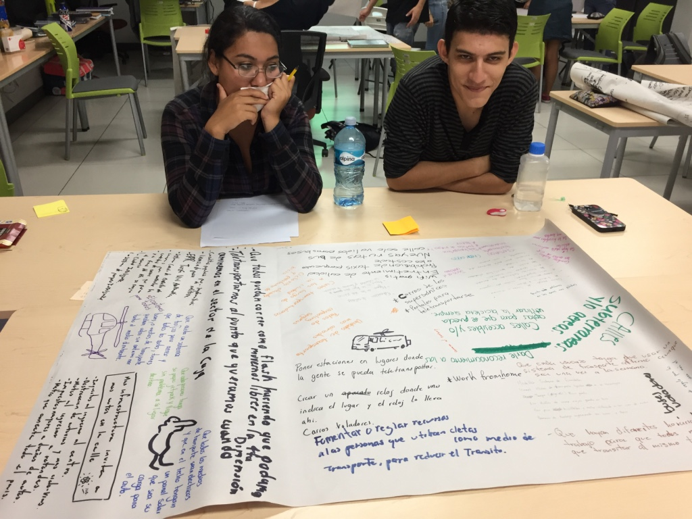

-
Día de presentación
(15/03/2019)
El viernes 8 de Febrero, tuvimos presentación. Nos fue bien pero aún hay muchas cosas que mejorar en el proyecto, e intentar aterrizar ideas.

-
Clase 2
(15/03/2019)
El equipo.

-
Clase 2
(15/03/2019)
Re-exploración.

-
Clase 2
(16/03/2019)
Usando la información y el resultado del proceso anterior, acá pudimos desarrollar una una posible solución al problema que afecta las necesidades del usuario. Y crear una idea macro.
-
Clase 2
(17/03/2019)
Por medio de este proceso, donde buscamos temas relacionados el objetivo 9 de Industria, innovación e infraestructura. Logramos encontrar un posible usuario afectado, de acuerdo a sus necesidades. Muy interesante.
-
Clase 1
(18/03/2019)
El Bisonte Volador, esta es la imagen de nuestro equipo.